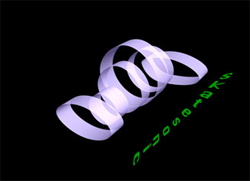
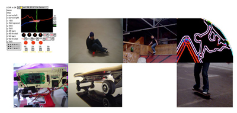

|
Download Saktesonic Poster
Skatesonic is a commissioned residency project by ZeroOne San Jose, IDEO, and the The Sally and Don Lucas Artists Programs at the Montalvo Arts Center.
The Lickr 
This uniquely augmented skateboard called _the Lickr_ is a new musical controller instrument/toy. Equipped with a wireless microphone, battery pack, optical wheel rotation sensor, 2 proximity detectors, 3 gyro sensors and bluetooth transmission device, the system tracks the 3D-movement of the skateboard.
Movement is analyzed and turned into musical fantasy.
The Lickr has its ear close to the ground. It hears in audio and data. The real audio from skateboard on surface is an integral part of the music - a fundamental layer of the environment that enables a grounding. This centrality (a memory) from which to depart, compare through repetition, difference, layering, and erasure A morphing from organic to synthetic. A pre-meditated musical architecture is created to allow boundaries within which to control the musical outcome. The music becomes a game and skaters can jam like a band.
MUSICAL FORM AS SENSUOUS PHYSICALSPACE
Sound reveals space, be it physical, emotional, social or imaginary. Connecting the gestures of a physical reality with musical form and texture implies superimposing these two realities so that they fold back on themselves, thus creating a strange new space. Skatesonic is a hyper-territorialization of skateboard-culture. Riding waves of chaotic timing, implying temporary control of what is temporal. The composer creates a system to be experienced rather than a final piece of music.

The architect’s idea (extending concept into ramp/space design): Accessing the idea of displaced curves that create a linear path through but also cross-paths that have different speeds, literally as if each cross-section is a gate to another dimension where you can loose yourself, playing in a different dimension than the linear path and go back again. A disturbance of the ground, that allows you to experience both a skeleton - divisions, modules - and continuity between the whole and the ground - different speeds, skate figures,
Each move translates into musical parameters and the rider ends up skating through a landscape of music (which s/he influences over time). Physically, the skateboard is absorbed into the body (similar to the way a music instrument becomes part of a musician), and allows a skateboarder to use the architecture in a dynamic playful way. Every nook and cranny becomes a surface that is encountered in a direct way similar to human touch on a musical instrument.
URLs:
Interview with Sylvie Parent
www.otoplasma.com/skatesonic/
http://www.eyebeam.org/reblog/archives/2006/04/skateboard_music_interface.html
http://www.turbulence.org/blog/archives/002350.html
http://www.we-make-money-not-art.com/archives/008375.php
|